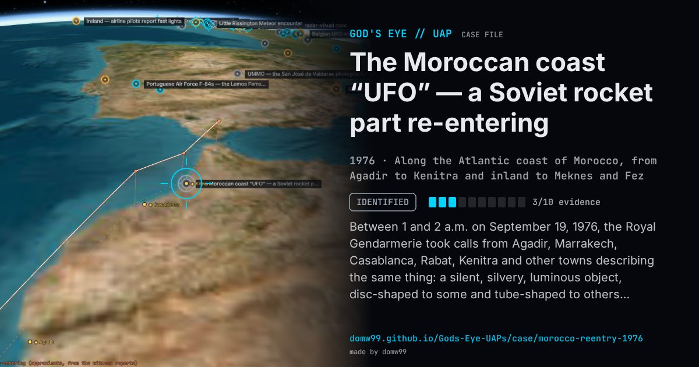

The Moroccan coast “UFO” — a Soviet rocket part re-entering

Between 1 and 2 a.m. on September 19, 1976, the Royal Gendarmerie took calls from Agadir, Marrakech, Casablanca, Rabat, Kenitra and other towns describing the same thing: a silent, silvery, luminous object, disc-shaped to some and tube-shaped to others, moving slowly from south to north parallel to the Atlantic coast and giving off intermittent trails of bright sparks and fragments. Major Mohamed Lissaoui of the Gendarmerie saw it himself at about 1:15 a.m. on his way back from Kenitra, flying low and slowly “as if it were an aircraft preparing to land”. King Hassan II sent the Gendarmerie’s commander, Col. Housni Benslimane, to the U.S. embassy on September 23 to ask what the Americans knew; the defence attaché was shown witnesses’ drawings and cabled Washington. The State Department answered that it knew of no U.S. aircraft or satellite activity and that a meteor or a decaying satellite was possible. The cables became public through WikiLeaks in 2013.
Explanation
In 2012 the satellite tracker Ted Molczan matched the time and track to the re-entry of a piece of a Soviet Molniya rocket (an ullage-motor assembly from the third stage that orbited Molniya 1-35 in July 1976), an object catalogued by U.S. space tracking. The State Department’s 1976 reply had already said the sightings “could conceivably be compatible with a meteor, or a decaying satellite”. The witnesses’ estimate of 1,000 m was far too low, as estimates of a re-entry’s height usually are.
What was seen
Shape: A silvery, luminous flattened ball or a large luminous tube, shedding bright sparks from the rear
Witnesses: People in Agadir, Kalaa Sraghna, Essaouira, Casablanca, Rabat, Kenitra, Meknes and around Fez, including Maj. Mohamed Lissaoui of the Royal Gendarmerie
Duration: Minutes; most reports between 01:00 and 01:30
Sources
- U.S. embassy Rabat cable 1976RABAT05209 (WikiLeaks)
- State Department reply, cable 1976STATE247538 (WikiLeaks)
- Foreign Policy — The Soviet space junk that became a Moroccan UFO
Browse
- 1970s
- Identified
- Tracked object events
- Official government documents
- Many independent witnesses
- Lights and fireballs
- Spheres and orbs
- Cylinders and cigar shapes